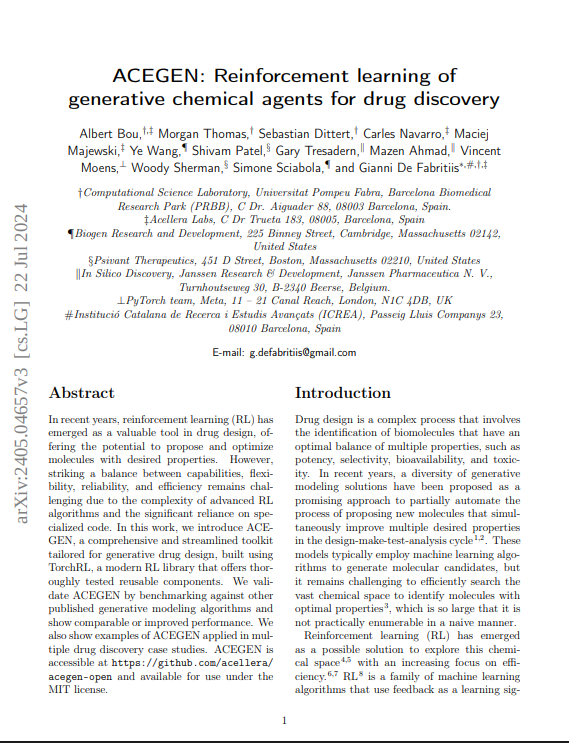
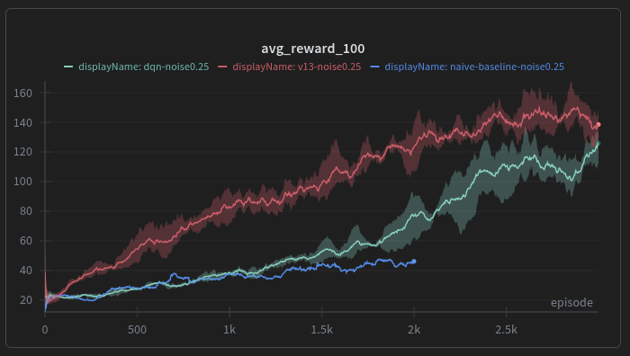
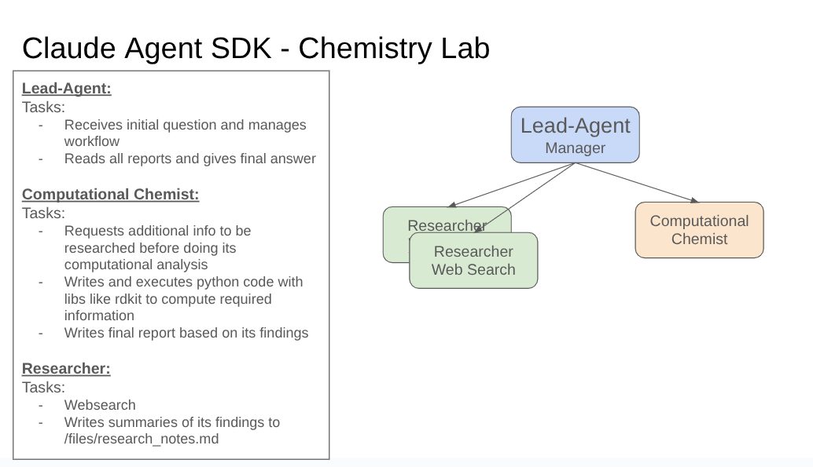

Connecting agents with tools to create hypotheses and test them automatically
Automating complex workflows with AI agents. Applications include scientific research, engineering, and general work. The goal is to connect agents with tools such as simulations so that they can create hypotheses and test them automatically.
Agent-driven workflows and applications


An automated iterative research loop using Claude Code. Starting from a paper on deep active inference, the agent implemented a baseline algorithm, then autonomously proposed and tested improvements over multiple iterations — pushing performance from a mean reward of 42.6 to 144.5 (>3x), beating DQN on noisy CartPole. All done in a single day with no additional tools.

A multi-agent system built with the Claude Agent SDK for automated compound classification on Therapeutics Data Commons (TDCommons) benchmarks. A lead agent orchestrates a computational chemist that writes and executes Python code (RDKit, DeepChem) and dynamically spawns a researcher for web lookups when needed. Improvements are driven by an automated iteration loop: run the benchmark, generate a report, auto-create GitHub issues for improvements, implement fixes in a PR, re-run the benchmark, and merge if results improve. Through this process, outsourcing domain knowledge into specialized classification skills (hERG, Absorption, Metabolism) and adding ML-based predictions, cost dropped from >$1 to ~$0.10 per question and full benchmark accuracy improved from 46% to 80%.
Visualizations, results, and media